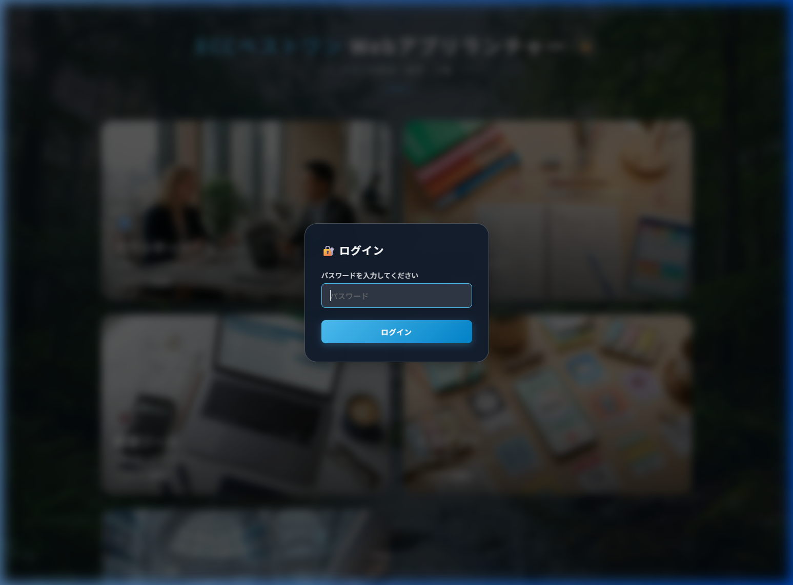
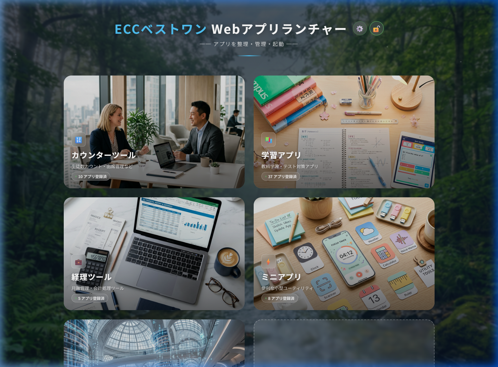
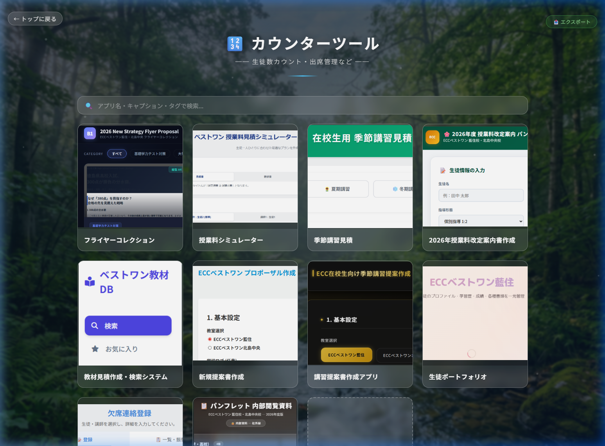
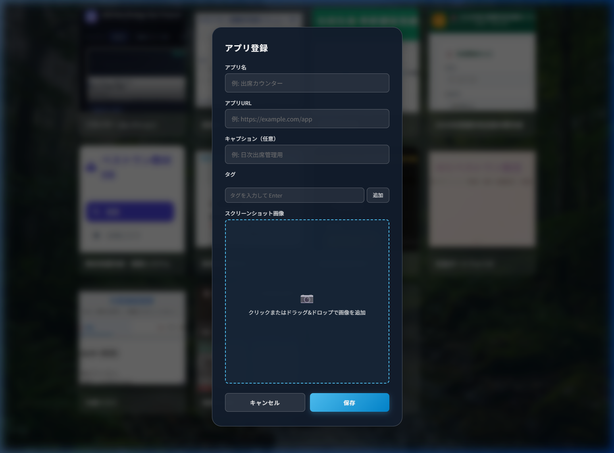
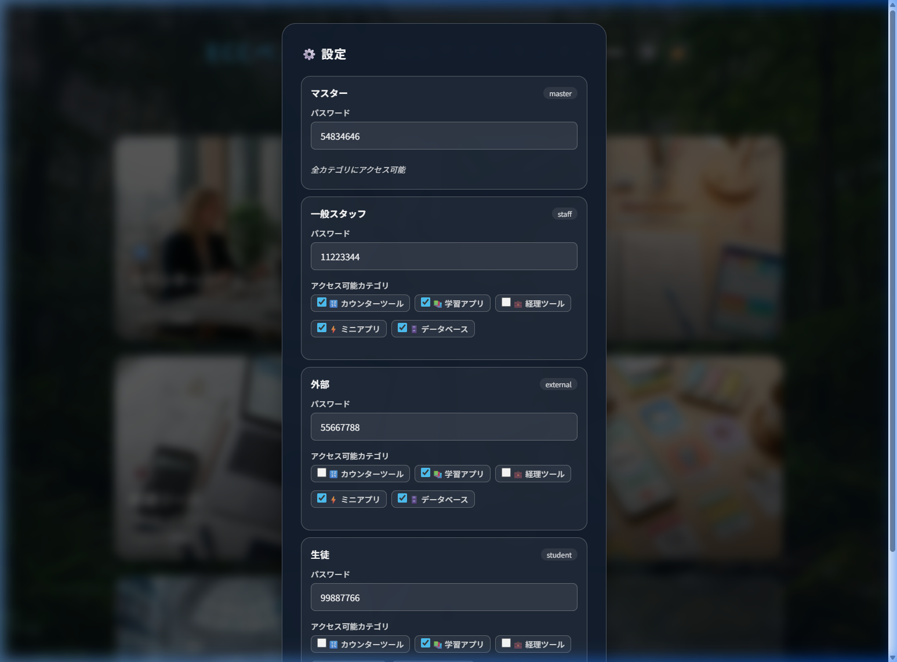
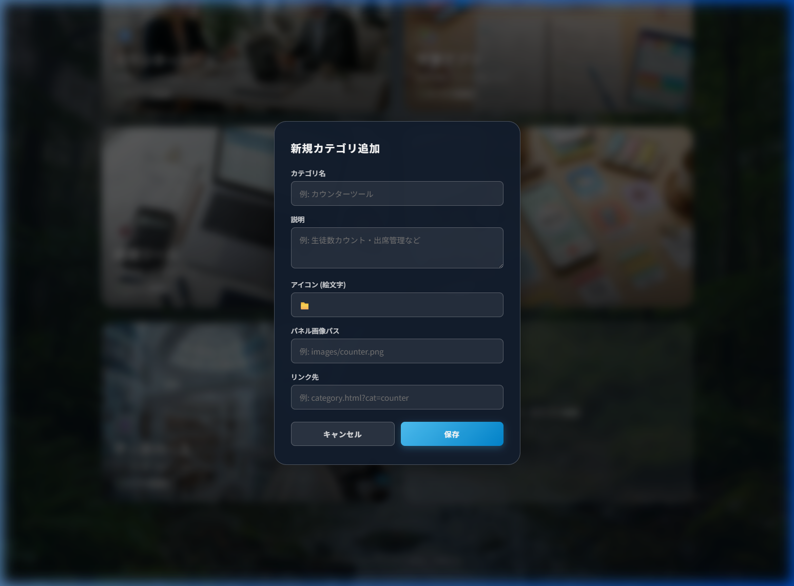
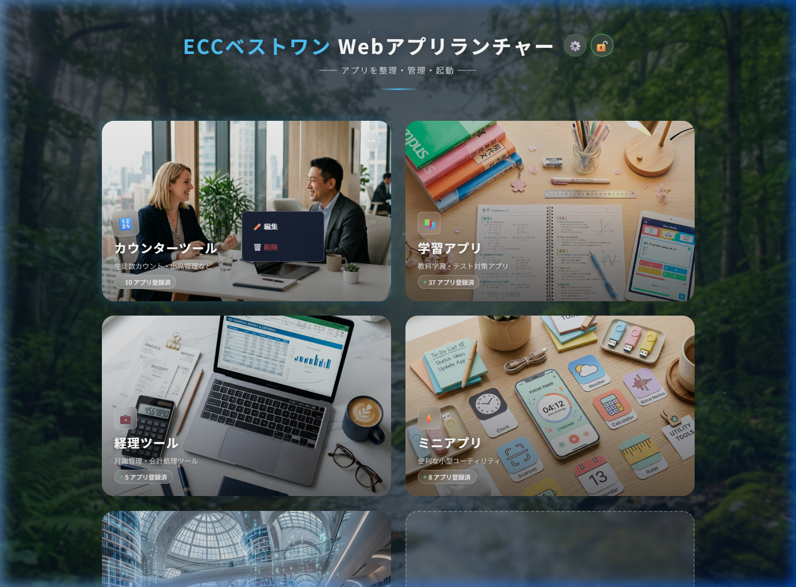

📖 概要
ECCベストワン Webアプリランチャーは、学習塾で使用する各種Webアプリケーションを一元管理・起動するためのランディングページです。
- 対象教室
- ECCベストワン藍住校・北島中央校
- 動作環境
- Chrome / Safari / Edge（最新版）
- 技術スタック
- HTML + CSS + Vanilla JS（フレームワーク不使用）
- デプロイ先
- Vercel（本番）/ localhost（ローカル開発）
- 認証方式
- ロールベースパスワード認証（4ロール）
🏗️ アーキテクチャ
ファイル構成
├── index.html …トップページ（カテゴリ一覧）
├── category.html …カテゴリ詳細ページ（アプリ一覧）
├── app.js …トップページのロジック（認証・カテゴリ管理）
├── category.js …カテゴリページのロジック（アプリCRUD）
├── style.css …共通スタイル
├── category.css …カテゴリページ専用スタイル
├── manifest.json …PWAマニフェスト（ホーム画面アイコン）
├── start.bat …ローカルサーバー起動スクリプト
├── data/ …デプロイ用JSONデータ
│ ├── counter.json
│ ├── learning.json
│ ├── accounting.json
│ ├── mini.json
│ ├── database.json
│ └── roles.json …ロール設定
└── images/ …画像ファイル
├── bg.png …背景画像
├── icon-512.png …ファビコン（512px）
├── apple-touch-icon.png …iPhone用（180px）
└── *.png …カテゴリカード画像
データ保存方式
| データ種別 | ローカル環境 | Vercel（本番） |
|---|---|---|
| カテゴリ情報 | localStorage（キー: lp_categories） |
localStorage（デフォルト値をJS内に保持） |
| アプリ一覧 | localStorage（キー: lp_cat_{catId}_apps） |
data/{catId}.json から読込 |
| アプリ画像 | IndexedDB（DB: lp_images_db） |
data/{catId}.json 内に base64 埋め込み |
| 認証状態 | localStorage（lp_authenticated 等） |
同左 |
| ロール設定 | localStorage（lp_roles_config） |
data/roles.json から読込 |
localStorageが空の場合、data/フォルダのJSONファイルから自動復元する機能が実装されています。
🖥️ 基本操作
ログイン
アプリにアクセスすると、ログインモーダルが自動表示されます。ロールに応じたパスワードを入力してログインします。

デフォルトロール一覧
| ロール | 権限 | 初期パスワード |
|---|---|---|
| マスター | 全カテゴリ＋設定変更＋カテゴリ追加/削除 | 54834646 |
| 一般スタッフ | カウンター/学習/ミニ/データベース | 11223344 |
| 外部 | 学習/データベース/ミニ | 55667788 |
| 生徒 | 学習のみ | 99887766 |
data/roles.json
に反映する必要があります。ダッシュボード（トップページ）
ログイン後、アクセス可能なカテゴリがカード形式で表示されます。各カードには登録済みアプリ数が表示されます。

ヘッダーアイコン
| アイコン | 機能 | 表示条件 |
|---|---|---|
| ⚙️ | 設定モーダルを開く | マスターログイン中 ＋ ローカル環境 |
| 🔓 / 🔒 | ログアウト / ログイン | 常時表示 |
カテゴリページ
カテゴリをクリックすると、そのカテゴリに登録されたアプリの一覧が表示されます。検索バーやタグフィルターでアプリを絞り込むことができます。

カテゴリページの操作
| 操作 | 説明 |
|---|---|
| 🔍 検索バー | アプリ名・キャプション・タグでフィルタリング |
| タグボタン | タグをクリックしてフィルタリング（複数選択可） |
| カードクリック | アプリのURLを新しいタブで開く |
| ✏️ / 🗑️ ボタン | アプリの編集 / 削除（ローカル環境のみ） |
| ドラッグ&ドロップ | カードを並べ替え（ローカル環境のみ） |
| 📤 エクスポート | カテゴリのデータをJSON形式でダウンロード |
アプリ登録
カテゴリページ内の「+ アプリ追加」カードをクリックすると、アプリ登録モーダルが表示されます。

入力項目
| 項目 | 必須 | 説明 |
|---|---|---|
| アプリ名 | 必須 | カードに表示されるアプリの名前 |
| アプリURL | 任意 | クリック時に開くURL |
| キャプション | 任意 | アプリの説明文（カード下部に表示） |
| タグ | 任意 | 検索・フィルタリング用のタグ（複数設定可能） |
| スクリーンショット画像 | 任意 | クリック / ドラッグ&ドロップ / ペーストで画像を追加 |
🔧 管理者操作
ロール設定
ヘッダーの ⚙️ ボタンから設定モーダルを開き、各ロールのパスワードとアクセス可能カテゴリを変更できます。

- マスターとしてログイン（ヘッダーに ⚙️ が表示される）
- ⚙️ ボタンをクリック → 設定モーダルが開く
- 各ロールのパスワード欄を編集
- 非マスターロールのアクセス可能カテゴリをチェックボックスで設定
- 「保存」をクリックして設定を反映
- 「📤 エクスポート」で
roles.jsonをダウンロード →data/フォルダに保存
カテゴリ管理
トップページの「+ カテゴリ追加」カードから新規カテゴリを追加できます。既存カテゴリは右クリックで編集・削除が可能です。


エクスポート（Vercel同期）
ローカルでの変更をVercelに反映するには、データをJSONエクスポートして data/ フォルダに保存する必要があります。
- 対象カテゴリページを開く
- 右上の「📤 エクスポート」ボタンをクリック
{catId}.jsonがダウンロードされる- ダウンロードしたファイルを
data/フォルダに上書き保存 - Git commit → push して Vercel にデプロイ
roles.json
も忘れずにエクスポートしてください。🚀 ローカルサーバー起動
方法1: start.bat を使う
プロジェクトフォルダ内の start.bat をダブルクリックすると、自動でHTTPサーバーが起動しブラウザが開きます。
方法2: コマンドラインから起動
# PowerShell / コマンドプロンプト
cd "C:\Users\makoto\Documents\アプリ開発\ECC-Tokushima-Apps-LP"
python -m http.server 8000起動後、ブラウザで http://localhost:8000 にアクセスします。
file:// プロトコルでは fetch() が動作せず、data/
フォルダからのデータ読み込みに失敗します。🌐 Vercelデプロイ手順
- 全カテゴリのデータを「📤 エクスポート」でダウンロードし、
data/フォルダに保存 - 設定モーダルから
roles.jsonもエクスポートし、data/フォルダに保存 -
Git でコミット・プッシュ:
git add . git commit -m "データ更新" git push - Vercelが自動デプロイを実行（通常1〜2分で完了）
- 本番URLでアプリの動作を確認
🛠️ メンテナンス
データバックアップ
定期的にデータをバックアップしておくことを推奨します。
- 各カテゴリページ → 「📤 エクスポート」でJSONをダウンロード
- 設定画面 → 「📤 エクスポート」で
roles.jsonをダウンロード - ダウンロードしたJSONファイルをバックアップフォルダに保存
データ復元
バックアップからデータを復元するには:
- バックアップの
*.jsonファイルをdata/フォルダにコピー - ブラウザの localStorage をクリア（DevTools → Application → Clear storage）
- ページをリロード →
data/フォルダから自動復元される
フォルダ移動時の対応
プロジェクトフォルダを別の場所に移動した場合、ブラウザの localStorage
はオリジン（localhost:8000）に紐づいているため、通常はデータが引き継がれます。
ただし、以前のデータが表示されない場合は以下を確認してください:
data/フォルダにJSONファイルが存在するか確認- ブラウザでスーパーリロード（
Ctrl+Shift+R） - カテゴリを開くと、
data/から自動で復元される
🔍 トラブルシューティング
| 症状 | 原因と対処 |
|---|---|
| 「0 アプリ登録済」と表示される |
localStorage にデータがない状態。data/
フォルダにJSONがあれば、カテゴリページを開くと自動復元されます。JSONもない場合はバックアップから復元してください。
|
| ログインモーダルが表示されない | すでにログイン済みの状態です。🔓 ボタンをクリックしてログアウトしてからやり直してください。 |
| ⚙️ 設定ボタンが表示されない | マスターロールでログイン中かつローカル環境（localhost）でのみ表示されます。Vercel上では非表示です。 |
| アプリの画像が表示されない |
画像は IndexedDB
に保存されます。ブラウザのストレージがクリアされた場合は画像が失われます。再度エクスポート→インポートするか、アプリを編集して画像を再登録してください。
|
| Vercel上でリンクが壊れる | ファイル名にスペース・日本語・括弧が含まれていないか確認してください。ASCII文字のみのファイル名に変更してください。 |
| ファビコンが表示されない | Ctrl+Shift+R でスーパーリロードしてください。キャッシュが原因の場合はこれで解消します。 |
| ローカルサーバーが起動しない |
Python がインストールされているか確認: python --version。未インストールの場合は python.org から 3.13.x をインストールし、「Add to
PATH」にチェックを入れてください。
|
| ホーム画面のアイコンが正しくない |
manifest.json と <link rel="apple-touch-icon">
が正しく設定されているか確認。ホーム画面から一度削除して再追加してください。
|
ブラウザの開発者ツールで確認
問題発生時は、ブラウザの開発者ツール（F12）を使って以下を確認してください:
| タブ | 確認内容 |
|---|---|
| Console | JavaScriptエラーの有無 |
| Application → Local Storage | 保存されているデータの確認・手動編集 |
| Application → IndexedDB | アプリ画像データの確認 |
| Network | data/*.json の読み込み状況（404エラー等） |